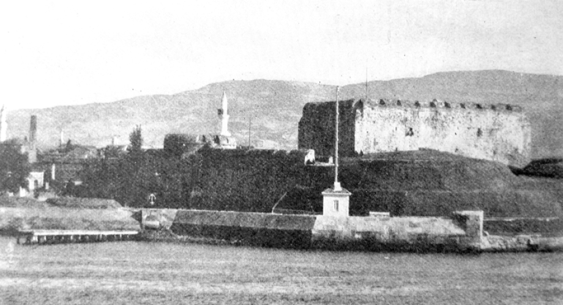

BEŞİNCİ BÖLÜM
UNUTULMAZ HATIRALAR
Hatıratlar Çanakkale savaşlarının belki de en zayıf kalan taraflarından biri. Yabancıların onca hatırasına rağmen Osmanlı tarafından yazılanlar çok zayıf kalıyor. Bugün bir Çanakkale gazisi ile görüşmenin imkanı kalmadı. Tek tük yapılan röportajlardan çok şey öğrenmek mümkün. Bunlardan biri de Mehmet Gökalp’in Hayat Tarih Mecmuası için Bursalı bir Çanakkale Gazisi ile yaptığı röportaj. Röportaj esnasında 85 yaşında bulunan Gazi İsmail Ukuf, o yıllarda Bursa Orhangazi’de ayakkabıcılık yapmaktadır. Bu metin derginin Kasım 1976 tarihli 11. Sayısında yayımlanır. (Metin içindeki ara başlıklar tarafımızdan konulmuştur. F.Y.)
GELiBOLU yarımadası üzerinde, 1915 yılının Mart ortalarında başlayan ve sekiz aydan fazla süren muharebelere dair batılı tarihçiler birkaç kitap yazdıkları halde, Türk tarihçileri bu çok önemli olaya gereği gibi eğilmediler. Aradan yarım asırdan fazla bir zaman geçmiş olmasına ve 300.000’e yakın vatan evlâdının Gelibolu yarımadasında şehid düşmüş bulunmasına rağmen, elimizde tarafsız bir metodla yazılmış kaynak bulunmayışı hayli üzücüdür. General Sir Ion Hamilton’un “Gelibolu Günlüğü”nde, 17 Mayıs 1915 tarihinde Arcadian gemisinden Lord Kitchener’e gönderdiği mektupta şu satırları okuruz:
“…Diğer taraftan çok kuvvetli olan düşman savunmasını yıkmak için, cephelerimizde daha fazla kuvvete ihtiyaç var. Türkler, şüphesiz serbest kaldıkları cephelerden, Edirne, Keşan, İstanbul ve Asya’ dan ihtiyat birlikleri getiriyorlar.”
İşte Edirne’den 1915 yılı Mayıs ayında Çanakkale’ye sevk edilen 3. fırka 5. bölükten Mehmet oğlu İsmail Ukuf da muharip askerler arasında bulunuyormuş. Kendisi halen 85 yaşındadır ve Bursa’nın Orhangazi ilçesinde ayakkabıcılık yapıyor. Bize şunları anlattı:

Çanakkale gazilerinden İsmail Ufki
Köylü Kadınların Ayran İkramı
– Edirne’den sıcak bir yaz günü Çanakkale’ye doğru yola çıktık. Sırtımızda yirmi sekiz kiloluk ağırlık var. Bunlar kaput, günlük kumanya, matara, Almanların verdiği tüfek, cephane, kuru bakla ve mutfak odunu... Yolda yemek pişirmek için odun da taşıyorduk.
Yollar patika, hava sıcak. Bütün erat terliyor. Uzunköprü’ye gelirken bir köyde kadınlar ellerinde su testileri, ayran bakraçları ile önümüze çıktılar. Bölük kumandanımız Celâl Yüzbaşı kadınlara:
– Asker yorgun ve terlidir, su içirmeyiniz, diye mâni olmak istedi. Başka bir kadın ayran bakracı ile Celâl Bey’in karşısına dikildi:
– Öyleyse ayran içirin. Vatan evlâdları sıcakta düşüp bayılıyor, yazık değil mi? Benim oğlum da askerde... O da şimdi sıcaktan cephede kavruluyordur, dedi ve bakraçtan bir bakır tasa ayranı doldurdu, Yüzbaşıya uzattı. Yüzbaşı Celâl Bey:
Sağ ol bacı, seni anlıyorum. İçin anne şefkatiyle yanıyor, ama ben de bu ayranı içersem hasta olurum, deyince, köylü kadın benzin alevi gibi birden parladı:
Yaa! Oğullarımızı cephede düşmana kırdırdınız, şimdi de güneş altında bayıltmak istiyorsunuz.
Bu sözler bölük kumandanımızı yumuşattı, bir ağaçlık altında on dakika mola verdik ve terlerimiz kuruduktan sonra su ve ayranı içtik. Tekrar yola çıktık. Bir haftalık bir yürüyüşten sonra Gelibolu Yarımadası’nın uç kısmına, tâ Seddülbahir’e vardık.
Boğaz’da Boğaz Boğaza Bir Dövüş
Hava sıcak, su yok. Kanlıdere sırtlarında durmadan siper kazıyoruz. Akşam olunca düşman zırhlı gemileri sahile yanaşıyor ve cehennemi bir bombardımana başlıyordu. Bir bomba, bir manganın üzerine düştü mü, kol, bacak, kafa havada uçuyordu. Ben bu korkunç sahneleri görünce içimden titriyordum. İngilizlerin topları uzun menzilli ve gülleler çok tesirliydi. Bizde ise bakayadan kalma 15 inçlik dağ topları vardı. Atıyorlardı topları, ama mesafesi kısa olduğundan tesir etmiyordu. Düşman saatlerce cephemizi top atışıyla dövüyor, sonra taarruza kalkarak üzerimize saldırıyordu. Boğaz boğaza dövüştüğümüz çok oldu. Hayli düşmanı süngümle göğüsledim. Kaç kişi öldürdüğümü bilmiyorum. Ama düşman da bizimkilerden çok askeri şehit etti.
Çok korkunç muharebeler oluyordu. İngilizler Helles Burnu’na çıkarma yapmışlardı. Arazi kazanmak için durmadan taarruz ediyorlardı.
Biz de karşı taarruza geçiyorduk. Önümüzde cephane sandıkları vardı. Piyade tüfekleri ile siperlerden ateş ediyorduk. Makineli tüfeğimiz çok azdı. İngilizlerde ise ağır makineli tüfekler vardı ve deniz piyadeleri bizim cepheyi tırpanla ot biçer gibi tarıyordu. 29. İngiliz Tümeni 25 Nisan’ da Seddülbahir’e, deniz piyadeleri ise aynı gün saat 5.55 de Bababurnu’na çıkartılmıştı.
İngiliz Saygısızlığına Karşı Osmanlı Terbiyesi
Geceyi açtığımız siperlerde geçiriyorduk. Üzerimizde ne bir battaniye, ne bir örtü vardı; kaputlarımıza sarılıp yatıyorduk. Yemeğimiz ya bir tas çorba, ya “kurtlu bakla” dediğimiz etsiz bir yemekti. Ekmeğimiz kuru bir peksimet. Katık yok. Biz bir gece siper kaza kaza, düşmana 20 metre yaklaşmıştık. Baktık, birden ufak bir teneke kutu önümüze atıldı. Hemen kaptılar. İçine baktık, toprak dolu, dışına baktık, İngilizce “soğuk et kutusu” diye yazıyordu. Ben düşmanın bu küstahça davranışına kızdım. Bana verilen ve içmediğim sigara paketini onlara fırlattım. Kötülüğe iyilik olsun diye:
– Al da keyfin yerine gelsin!... Dedim. Bir dakika geçmedi ki düşman siperinden uzunca bir paket daha atıldı. Yine bizimle alay ediyorlar, tahta parçası attılar sandık. Bir de kâğıdı açıp baktık ki bir çikolata... Zehirli mi, değil mi, diye yemekten çekinirken Adanalı bir asker alıp çikolatayı ısırdı, yedi. Biz de birer parça koparıp yedik. Böyle ufak-tefek hadiseler oluyordu. Ama gün ağarıp da düşman ateşe başlayınca, geceleyin gösterilen samimiyet ve dostluk artık yok oluyor, birbirimizi boğazlıyorduk. Düşünün, 20 metre ilerde yatan düşmanın yirmi metre berisinde insanın gözüne uyku girer mi?

Çanakkale Muharebatı kitabının kapağı
296 Asker 28’e İndi
Tam 22 gün Seddülbahir’de kâh siper kazdık, kâh muharebe ettik. Çok halsiz düşmüştük. Düşman deniz kenarında kamp kurmuş, nöbetçiler geziniyor. Bölük kumandanımıza diyorduk ki:
– Hücum edelim, şunları denizde boğalım. Atış emri verin... Rahmetli Celâl Yüzbaşı:
– Biz de öyle düşünüyoruz ama genel emir yok. Hem siz siperden çıktınız mı düşman gemilerden yine bombardımana başlar, hepiniz kırılıp gidersiniz. Sonra hangi kuvvetle bu toprakları müdafaa ederiz.
Mecburen siperlerde saklanıyor, düşmanın hareketlerine göre davranıyorduk. Onlar arazi kazanmak için saldırırsa, biz de saldırıyorduk. Bu savaşta çok kayıplar verdik. Bir gece bizim bölükten olanları bir tarafa çağırdılar. Gittik, 296 kişiden 28 kişi kalmıştık... Evet kırıla kırıla 3 manga kalmıştı koca bölükten. Sonradan yeni kuvvetler geldi, bölük mevcudu yüz kişiyi buldu.
Cephede Bir Şehzade
Bir ara cepheye Veliahd Yusuf İzzeddin Efendi59 geldi ve gezdi. Bizi teftiş etti. Enver Paşa da ordaydı. Enver Paşa’ya:
– Bu kadar askeri niçin kırdırıyorsunuz? Savunma yapacağınıza niçin taarruz yaptırıyorsunuz? diye çıkışınca Enver Paşa tabancasını çekip iki el ayaklanna doğru ateş etti, Yusuf İzzeddin Efendi de dönüp İstanbul’a gitti.
İsmail Ukuf bu sözlerden sonra cebinden iki sütun üzerine yazılmış ve Yusuf İzzeddin Efendi’nin fesli bir resmi bulunan “Tarihte Bugün” başlıklı ve “Veliahdın Sinir Krizleri” başlığını taşıyan bir yazıyı ve resmi gösterdi ve devam etti:
– İşte şu resimdeki Veliahd... Çok merhametliymiş. Bize acıdı. Enver Paşa’yı mı sordunuz? Çok cesur, kurt gibi bir adamdı. Gelip cepheyi gezdi. Hatırımızı sordu, ama kimse korkusundan derdini söyleyemiyordu. Vurur diye korkardı her subay ondan...
Halil Çavuş’un Kardeş İntikamı
Yeni gelen erat acemiydi. Doğru dürüst silâh atmasını bilmiyorlardı. Bu erleri 22 gün sonra Keşan tarafına çektiler. Ben de yorulmuştum. Bir süre daha kalsam, hasta olup siperde ölebilirdim. Gece göç hazırlığı yapılırken, düşmanın top atışı başladı. Siperler allak bullak oldu. Halil ve Kadir adında iki kardeş vardı. Kadir o gece şehit olmuştu. Sabah karanlığında kardeşi Halil Çavuş onun naaşını buldu. Yüzbaşı Celâl Bey’in huzuruna çıktı:
“Ben kardeşimin intikamını almadan bu cepheden bir adım atmam yüzbaşım.” diyordu.
Halil Çavuş’un bu sözüne karşılık, Yüzbaşı Celâl Bey:
“Oğlum Keşan’a gider, biraz dinlenir, kuvvetlenir yine gelir burada düşmanla çarpışırsın.” Dediyse de Halil Çavuş:
Kardeşimin kanı kurumadan, cesedi soğumadan onun intikamını almak istiyorum. İzin verin ben bu cephede kalayım. diye ısrar etti. Yüzbaşımız, tabur ve alay komutanlarıyla konuştu. Nihayet onun kalmasına razı oldular.
Sonradan duyduğuma göre, Halil Çavuş çok yaman savaşmış. Hayli düşman kırmış. Bilhassa gece akınlarıyla sahildeki nöbetçileri vurmuş. Ona bir makineli tüfek vermişler, iki saat içinde 500’e yakın düşmanı biçmiş. Hem de durmadan mevzi değiştirerek... Ağır makineli tüfeği elinde oyuncak gibi taşır, bir ağacın altında 250’lik bir mermi şeridini boşaltır, ikinci bir ağacın altına gider, orada biraz dinlenir, mermi şeridini makineliye sürer beklermiş. Düşman ilk ateş ettiği yere mermi yağdırmaya başlayınca, Halil Çavuş da ikinci mevziden başlarmış makineli tüfekle düşmanı biçmeğe... O Halil Çavuş’u sonra göremedim, belki de kardeşi Kadir gibi şehid oldu, belki kurtuldu. Allah ondan razı olsun.
Kan Kokulu Sular
Bizim topçularımız Çanakkale Boğazında düşmanın beş gemisini batırmıştı. Bu hâdise onları yıldırmıştı ve gemiler gündüz sahillerimize sokulamıyordu.
Çanakkale savaşı anlatılmakla bitmez. Çok kan döküldü. Kanlıdere’den su alırdık, öyle zaman oldu ki sular kızıl kanlı aktığından dere suyunu günlerce içemez olduk. Binlerce, asker ve subayımız şehid oldu. Ama sonunda üstümüze bütün dehşetiyle saldıran düşmanlar Çanakkale’den geçemeyeceklerini anladılar ve bir kış günü gerisin geriye gittiler. Zaferi biz kazandık. Daha sonra Gazze muharebelerinde bulundum. Orada Avusturyalılar, Macarlar ve Almanlarla beraberdik. Savaş 4 yıl sürdü. Sonra tekrar Edirne cephesine Cafer Tayyar Paşa’nın ordusuna katıldım, işte madalya beratım, işte teskerem.
Peki, maaş hak etmiş olmadın mı?
Diye sordum. İsmail Efendi derin bir ah çekti ve:
– Askerlik şubesine dilekçe verdim, o eski savaşlardır, sana maaş bağlamazlar dediler. Ne yapalım bizim kısmetimiz yokmuş, diyerek boynunu büktü.
Hamilton’un Sözleri
Bu 85 yaşındaki saygıdeğer Çanakkale kahramanını dinleyince insan duygulanıyor. İki gün önce gidip Çanakkale’yi, Gelibolu Yarımadası’nı gezdim. Kemalyeri’ne kadar gittim. Orada İngiliz ve Fransız mezarlıkları var. Türk şehitliği tepeler üzerinde dağınık vaziyette. Etraf yeşillikler içinde. Ağaçlar altında bazen sarı, kırmızı kır çiçeklerine rastlıyorsunuz. Sanki şehitlerin kanından renk almışlar... Bu anıları, Hamilton’un 17.6.1915 tarihinde T. French’e yazdığı mektuptan “aldığım şu satırlarla tamamlamak istiyorum.
“Mevzilenme, siper savunma işlerinde Türkler daima mükemmel. Bu askerler, kendilerine verilen görevleri aynen yerine getirmek hususunda pek mert hareket ediyorlar. Bir yere tam siper ettiler mi, araziye yapışıyor ve üzerlerine gelen her hedefi vuruyorlar. Bu cins savaşlarda Türk askeri çok usta...
Hakikaten ben hayatımda bu derece cesur asker görmedim. Bazıları ideal evsaftalar. Hücuma kalkıp ilerlemeğe başladık mı, üzerlerine yağdırdığımız mermi sağanağına aldırmadan, soğukkanlılıkla ayağa kalkıyor, siperlerden fırlıyor ve başlıyorlar ateş etmeye, el bombası atmaya...”
Düşman kumandanının takdir ettiği Türk askerini biz niçin taltif etmeyelim? Onların canı pahasına bu yurdu elimizde tutabildik. Şükürler olsun Allah’a...”60
BİR FUTBOL MAÇININ DÜŞÜNDÜRDÜKLERİ61
Çanakkale Muharebeleri ile futbolun ne alakası var?” diye düşünmeyin. Zira 1953’de yaşanan bir futbol maçı bugüne dair çok şey anlatıyor. Dönemin Tercüman gazetesinin 31 Ekim 1974 tarihli nüshasında Taylan Uygur imzasıyla yer alan “Serginin Özlemi” isimli yazı şöyledir:
“…İstanbul’un Vardarspor62 Kulübü başkanı Hakkı Merter’den dinlediğim gözler yaşartan, göğüsler kabartan, damarlardaki kanı alev alev yakan bir anıyı nakledeceğim bugün sizlere
Olay 1953 sıralarında Yugoslavya’da, Üsküp’te geçer. Ankara Demirspor futbol takımı bir dostluk maçı yapmak üzere Üsküp’e gelmişti. Oyun ev sahibi takımın üstünlüğü altında geçmekteydi. Hatta sonunda Demirspor karşılaşmayı 7-0 gibi çok açık bir farkla kaybetti. Konumuz bu açık farklı yenilgi değil; saha kenarında 70-75 yaşlarında bir ihtiyarla Makedonyalı gençler arasında geçen bir konuşma...
Evet, o koca ihtiyar vurmuş sırtına heybesini, bir gözünde beş-altı somun ekmek, diğerinde bir desti su, tam orta çizginin taç çizgisiyle kesiştiği yerin az berisine bağdaş kurmuş oturmuş, gözlerini dikmiş sahaya, adeta taş kesilmiş bakıyor. Vecd içinde, kendinden geçercesine sadece bakıyor. O koca ihtiyar bakıyor. Demirspor da yedikçe yiyor. Artık oyun futbol olarak ilgi çekiciliğini kaybettiği bir sırada bir grup Makedonyalı genç ihtiyara takılmaya başladılar:
– Baba sen anlar mısın ki futboldan, buraya gelmişsin?
– Baba sen gol nedir, taş, ofsayt, frikik neye denir bilir misin?
– Bilmem dedi ihtiyar.
– E niye geldin buraya?
Koca dede ileride bakmakta olduğu noktadan ayırmadan gözlerini, şöyle cevaplandırdı soruyu:
– Bir sevgiliyi görmeye!
Sonra devam etti titrek parmağını ileride, karşılıklı tribünün damından aşağıya sarkıtılmış Türk bayrağını göstererek:
– Bak şuradaki Ay-yıldızlı bayrağa, sevgilime. Şu maç dediğiniz hiç bitmese de bir hafta, on gün sürse, ben de doya doya seyretsem onu. Azığım, suyum yanımda. Gece gündüz gözümü kırpmadan seyretsem ben o sevgiliyi. Onun altında mülâzımlarımı, çavuşlarımı, Çanakkale’deki silâh arkadaşlarımı görüyorum.
Dede konuşmuyor, kükrüyordu artık. Bembeyaz sakalı gözlerinden süzülen yaşlarla ıslanmış, omuzları dikleşmiş, başı yukarılara kalkmıştı; çakmak çakmak gözleriyle baktı delikanlılara, sonra bir hamlede mintanını açtı. Sağ tarafında kavun girecek kadar bir boşluk, bir çöküntü vardı göğsünün. Yumruğunu sıkmış, havayı döğüyordu artık dede:
– Bak, diye adeta haykırdı, onun gölgesinde İngiliz bu parçamı aldı götürdü. Feda olsun her şeyim ona.

Kilitbahir Kalesi’nin 1950’li yıllarda görünüşü
HEY GİDİ HEY HÜSEYİN ALİ
Bir Alman gazetecinin, Gelibolu’da kara savaşlarının en kızıştığı anda İtilaf Devletleri ile Osmanlı kuvvetleri arasında meydana gelen ve Yüzbaşı Hüseyin Ali’nin de şehit olduğu olaylara ait gözlemleri şu şekildedir.63
Osmanlı Ordu-yı Hümâyûnu Başkumandanlığı Vekâleti
Şube: 2
Numara: 16183
Harb Matbûât Karargâhı’ndan alınmışdır.
Hatt-ı harbde dolaşan bir Alman muhabiri tarafından yazılan:
“Gelibolu tepeleri üzerinden atla gidiyorum. Etraf samt u sükûn içinde... Uzaklarda bir müezzin akşam ezanı okuyor.
Vadilerden gelen beyaz ve şeffaf bir sis, din ve vatan uğrunda fedâ-yı can eden kahramanların necîb ve sâf ruhlarıyla birlikde semâya, semt-i câvidâna doğru yükseliyor. İşte Çanakkale kahramanları böylece yükseliyorlar!
O gün pek sıcakdı.
Orada, yüz metre uzakda İngiliz siperleri bulunuyor ve tüfek kabzalarından kavîce kavramış yüzlerce kahraman askerler, bunlara karşı hâzır duruyorlar. Öbür tarafda her şey âlûde-i sükûn. Yalnız, o menhûs tel örgü mâni‘aları güneş ziyâsından parıldıyor. Yüzbaşı Hüseyin Ali kendi avcı siperleri içinde dolaşıyor. Etraf, o kadar sâkin, o kadar latif ve rahat ki... Avcı hatları ilerlemeye başladı... Taarruz kızışıyor...
“İleri, Allah yardım ediyor! Allah verecek. Ali’ye dürt, Mehmed ileri! Haydin hep birlikde!.. İleri!.. Abdullah dermanın kalmadı mı? Yaralandın mı yoksa?.. Düşman siperleri işte şurada!.. Şimdi onu alırız... Allah!.. İsabet etdi!” Öbürleri daima ilerlemekde... Yeni kitleler geliyor, öne geçenler daima çoğalıyor. Kurşunlar, yağmur gibi yağıyor, şarapneller öterek patlıyor.
“Asker!.. Çabuk!.. Siper kazın!.. Çabuk cephane getirin!.. Kurşunları buraya dök!.. Sükûnetle nişan al!..
Daha ileriye... Mâni‘ayı dolaşıp siperlere girmeli. Haydi çocuklar, hücum!.. Hücum!..” Siperler içine girdik. “Son düşmanları tard ediniz!.. Dur, Mehmed! Ali bana yardıma gel!.. Benim karşımda da çok var!.. Sabret!.. Geliyorum!..” Göğüs göğüse geliniyor. Bir tarafdan yeni askerler sel gibi ilerliyor, daima yeniler geliyor...
Şarapneller havada patlıyor...
Düşman burada yılıp kaçıyor. “Pekâlâ, bırakma!”
Diğer[i] merakda... “Onlar o kadar çok ki! Zararı yok!.. Sebat et!.. İşitiyor musun? Sebat!..”
“Kaçanlara ateş edin!.. Ahmed!.. Siperi bir kişilik daha genişlet!.. Siz de kazınız, siperler derince olsun. Kum torbalarını öbür tarafdan koyunuz”.
“Çabuk çocuklar, çabuk! Vakit yok!.. Düşman mukabil taarruza başlıyor. Cephane buraya!.. Koş! Yoksa kurşunla vurulacaksın!.. Koş!..” Düşmanı ateş karşılıyor ve artık yaklaşamıyor. Askerler kazma, kürekle geliyorlar. Siperler derinleştirildi ve gerideki safla irtibat te’sis olundu.
Ölüler yatıyor, mecrûhlar inliyorlar ve güneş artık gurûb ediyordu. Yüzbaşı Hüseyin Ali, zabt edilen düşman siperinden ağır ağır getiriliyor. Bir kurşun alnına isabet etmiş. Nazarları, âteşîn ve zafer sevinçleriyle lem‘adâr. Orada tâ memleketin cenûb taraflarında beyaz ve küçük bir şehirde onun için ağlayan sevgilisi. Onu şimdi şanlı ve nişânlı görünce kim bilir ne kadar sevinecekdir!
Ben Gelibolu tepeleri üzerinde atla gidiyorum.
Ortalık o kadar sükun ve sükût içinde ki!..”
3 Eylül sene [1]331 / [16 Eylül 1915]64
Bir Çanakkale Şehidi’nin Vefat Tarihi Neden 1919 Yazılır
Kahramanın adı Maraş Andırınlı Abdurrahman Çavuş, yaklaşık kırk kadar arkadaşıyla elinde bayrakla köyünden çıkıp Çanakkale yollarına dökülen on binlerce askerden bir asker. Cepheden bilinen bir mektubu ulaşır köyüne, bir gazete kâğıdının yazısız kısımlarına sığdırmıştır duygularını: “Burada Mehmed Çavuş ile karşılaştım. Bende beş kuruş yok ki ona vereydim. Onda beş kuruş yoktu ki bana vereydi. Birbirimize çaresizce bakışıp durduk.” Son satırları okunur gazete kağıdına yazılan asker mektubundan.
Sonra Abdurrahman Çavuş’un şehadet haberi ulaşır Maraş’a. Kor bir alev gibi. Ailesi inanmaz onun göçüp gittiğine. Sırf bu yüzden olsa gerek dört sene beklerler Abdurrahman Çavuş’u. Belki bir gün gelir diye… Gelen giden olmayıp da ufukta umut tükenince 1919’da nüfustan kaydını düşerler.65
ŞAİRİN ŞAHİTLİĞİNİN ŞİİRİ
Çanakkale savaşları devam ederken Türk tarihinde ilk defa cepheye çeşitli sanatçılar götürülür. Başkumandanlığın daveti üzerine yapılan bu gezi 11 Temmuz 1915’te gerçekleşir. Ağaoğlu Ahmet, Orhan Seyfi (Orhon), Enis Behiç (Koryürek). Celâl Sahir (Erozan), Hıfzı Tevfik (Gönensay). Hakkı Süha (Gezgin), Hamdullah Suphi (Tanrıöver), Ressam Çallı İbrahim, ressam Nazmi Ziya, Selahaddin, Ali Canip (Yöntem), Ömer Seyfeddin, Mehmed Emin (Yurdakul), Muhiddin, Musikişinas Rauf (Yekta), Yusuf Râzî Bey gibi sanatkâr ve edebiyatçılar savaşın cereyan ettiği yerlerde incelemelerde bulunur. İstanbul’a geri dönüşte de cephede gördüklerini, askerin hissiyatını, savaşa dair düşünce ve hislerini çeşitli eserlerle kaleme dökmüşlerdir. Bu heyet içinde yer alan İbrahim Alâeddin (Gövsa) da ziyaretin akabinde kaleme aldığı şiirlerini 1926’da Çanakkale İzleri isimli kitapta toplamıştır. Şimdi o kitapta şair şahit olduğu manzarayı şiiri ile anlatırken verdiği dipnotta da şiirin hikâyesini anlatır: (Metinlerin orijinal halleri korunmuştur.)
“17 Temmuz 1915 Cumartesi günü Çanakkale sahra hastahanelerini ziyaret etmiştik. Ağır yaralılara mahsus büyük çadır koğuşlarda tüyleri ürperten korkunç yaralılar vardı. Hele o aralık pansımanı yapılanlar arasında bir mecruh görmüştük ki bir bomba sadmesiyle (patlamasıyla) yüzü dağılmıştı. Ağzı, çenesi hemen temamile dökülmüş, boyunla burun arasındaki kısım müthiş bir oyuk hâlinde kalmıştı. Yaşıyacağı hakkında ümitler pek az olan bu kahraman yaralı, ayakta hiç bir müşteki hareket yapmaksızın o korkunç yaranın temizlenmesini bekliyor, bize sabırlı ve tevekküllü gözlerle bakıyordu. Ben o askerin, Türk ırkının bütün mahrumiyet ve felâketlerini ifşa eden, bakışlarından hissettiklerimi işte şu manzume ile tesbit etmek istedim.
Ey asker, yaranı gördüm ap açık
Çoğaldı gönlümün kederi, yası.
O yiğit çehreni dağıtmış yazık
Bir melun düşmanın vahşi bombası.
*
Tahammül etmezken gözlerim bile
Sen nasıl susarsın bu azap ile.
Sen nasıl susarsın diyorum, lâkin
Ağzının bir söze var mı mecali?
*
Çenen, dilin kopmuş, yalnız o derin
Bakışından sezdim düştüğün hali.
Söylesen o kadar duymazdım belki
Hissettim gözlerin bana diyor ki:
*
“Benim köyüm uzaklarda şirindi,
Bir ormanın gölgesinde serindi.
Ben yetiştim sakat anam sevindi,
Bir gün gelir diyip kansın, söyleyin.
*
Vurulmadan aslan gibi civandım,
Ocağımda bir tek gürbüz fidandım,
Yaşlı, dertli anacığıma bakandım.
Gene gelip bakar sansın, söyleyin.
*
Benim derdim görülenden daha çok,
içimde var acı, yanık zehir, ok.
Siz söyleyin ağzım, dilim artık yok.
Gönlüm bir az ferahlansın, söyleyin.
*
Ekin olsa harmanı kim sürecek?
Haram olsun milletime bu emek
Beyaz saçlı anam yerse bir değnek.
Jandarmalar hoş davransın, söyleyin.
*
Bu toprağı, akan selde boğulup,
Koruyan biz, şenleten biz, kul olup.
Sırtımızdan geçinenler koğulup
Hak sahibi ayaklansın, söyleyin.
*
Her cefaya göğüs veren topraklar,
Yoksulluktan inildeyen bucaklar,
Hıçkırarak sessiz akan ırmaklar
Bir az coşup kan bulansın, söyleyin.
*
Babam, dedem kaldı Moskof elinde,
Kardeşlerim vuruldu Rumelinde,
Çanakkale her köylünün dilinde
Dolaşırken beni ansın, söyleyin.
*
Bir kız gördüm daha on beş yaşında
Peri gibi bir pınarın taşında
Ağlamıştı bana geçit başında.
Bu halimi duyup yansın, söyleyin.
İbrahim Alaattin Gövsa66
İNGİLİZLER ÇANAKKALE’DE NEYİN ANITINI DİKER
Savaşın bitimini müteakip İngilizlerin alelacele pek çok anıt dikmesi Anadolu’da Yeni Gün isimli gazetede şiddetle kınanır. Siyah mahlasıyla dönemin Vakit gazetesinde yazan Hakkı Seha Bey’in makalesi İngiliz sansüründen dolayı Vakit’te yayınlanmayınca 27 Ağustos 1923’te Anadolu’da Yeni Gün’de yayınlanır. Gelibolu Yarımadası’na düzinelerce abide yaptırmasına inanamaz ve “gerçek mi?” diye kendi kendine soran yazarın İngiliz anıtları hakkındaki görüşleri gazetede şu şekilde yer bulur:
“Bolayır sırtlarına, Çimen Tepe eteklerine, Arıburnu, Seddü’l-Bahir yamaçlarına şerefsizce saçılan bu anıt bolluğu nedir? Bütçesine bir “anıt faslı” açan bu millet, hangi zafer, hangi şeref ve hangi kahramanlığın anısını ebedileştirmek niyetindedir?
İşittim ki, casusluktan tam not alamayan Rum ve Ermeni yılanlarını, orada işçi olarak çalıştırıyormuşsunuz. Ne âlâ!. . . Esasen siz her kötü ve alçak işi ehline vermekte ustasınız. Firar ve hezimet adına yapılacak duvarlara ancak onlarınki kadar namert ve şerefsiz ellerin hizmeti yakışır. Çanakkale’de korkudan titreyen ellerinizde, mükemmel silâhlarınız birer kadın yelpazesi gibi sallanıyor, boşuna cephane yakıyordunuz. Şarapnelleriniz o kadar yüksekte patlıyordu ki, biz bir uçak saldırısına uğradığınızı düşünüyor ve kahkahadan kırılıyorduk. Sonra gemilerinize kaçtınız. İşte siz bu rezalet hatırasını yaşatmak için bugün Anzak ve Conkbayırı’nda anıt yapıyorsunuz. Efendiler, hezimetlere çukur kazılır. Siz dünyanın en yüksek yükseltisi ile ayıbınızı örtmeye çalışsanız bile, tarih hiç şaşmayan kalemiyle gerçeği ortaya koyacaktır.
Yalnız biz şunu söyleyelim ki, anıtları dülgerler yapmazlar. O şeref anıtları, mağrur alımlı kahramanların geniş ve güçlü omuzları üstünde yükselir. Siz oralarda bir avuç kireç ve bir yığın mermerle, parçalanmış kibrinizin, yerle bir olmuş geleceğinizin hüsranını bırakıyorsunuz. Bari sıkılmadan alınlarının aklığını hatırlatmak için oralara kumandanlarınızın zivitten üretilen heykellerini de sıralayınız. Anıtlar bostanında korkuluklara da yer vardır. Biz Çaldıran’da, Kosova’da, Niğbolu’da, Sakarya’da, Çanakkale’de mucizeler yaratmış, bütün şereflerin sahibi olmuşken, yüksek sesle bağırmayı ar sayıyoruz, ötede siz düzinelerle anıt yapıyorsunuz. Siz mutlaka gülünç olmayı da bir erdem mi sayıyorsunuz?” 67
“YAŞASIN OSMANLILAR”
5 Mart Çanakkale Zaferi dönemin gazetelerinde büyük bir coşku ile işlenmiştir. Deniz zaferinden üç gün sonra Şinasi’nin Ahenk gazetesinde yayınladığı ve Çanakkale’yi derinlemesine değerlendirdiği “Yaşasın Osmanlılar” başlıklı uzun bir başmakalesi devrin hissiyatını dile getirmesi bakımından da güzel bir misaldir. Bu yazıdan kısa bölümler aşağıdadır:
“ … ve bu seferki tecrübelerin Çanakkale Boğazı’nın şimdiye kadar şahit olduğu muharebe hadiselerinin en müthişi olduğu, düşmanların yalnız dretnot, zırhlı, kruvazör olarak 19-20 parça ve neferatıyla daha ziyade gemileriyle hücum etmiş olmaları ile sabittir. Fakat avn-i hakla fedakâr, cesur topçularımızın şanlı müdafaalarıyla düşmanlarımızın istihkâmlarımıza yine fevkalade mühim haşarat ika edemedikleri, yine elim ve yeis ve nevmid ile ricata mecbur oldukları hatta müteaddit gemilerini gark ve hasara uğradıkları resmi, gayr-ı resmi membadan varid olan haberlerle teyid olunmaktadır.”68 …
“Boğaz’ın henüz methalinde iken bu kadar ziyana uğrayan donanmasının, biraz daha zorlamak suretiyle daha ne müthiş hezimetlere duçar olacaklarını, bilhassa bu son hücumlarında gereği gibi takdir etmiş olsalar gerektir.”
…
“…Çünkü yalnız Çanakkale’yi geçmekle ne payitahtı düşürmek ne Karadeniz Boğazını açmak kabil olmayacak, Osmanlılar katiyen istiman etmeyecekler (teslim olmayacaklar), düşmanlara edebiyen boyun eğmeyecekler, haklarını şeref ve nâmus-ı millilerini ilan-maşallah müdafaa edeceklerdir. Fakat düşmanımız ne harben ne siyaseten umduklarına nail olamayacakları gibi herhalde belâlarını bulacaklar, Almanların, Avusturyalıların, Osmanlıların kahr-ı tedmiri (kahredici güçleri) altında tamamiyle ezilip kalacaklardır. Hatta en büyük fenalıkları birbirlerinden göreceklerdir.”
…
“ … Boğazlar meselesi Rusya ile İngiltere’nin arasında tehlikeli uçurumlar açmağa başlamıştır.
Bundan başka henüz seyirci gibi görünen hükümetler bilhassa İtalya ve Rusların yahut İngilizlerin boğazlara hâkim olmaları Akdeniz’in muvazenesini zîr ü zeber (altüst) etmeleri farz olunursa bilahere (sonrasında) bu hükümetlerin de hayatları mahvedilmiş olacağı cihetle bu ciddi tecavüzlere karşı bunların tamamiyle bitaraf ve sakıt (tarafsız ve sessiz) kalacakları asla memul (arzulanır) değildir. Nitekim günlerden beri bu meselenin beynelmilel haiz olduğu ehemmiyet-i müstaceliyeti (acil ve önemli ) nispette mevzu-ı münakaşa (tartışma konusu) olmakta bu sebeble harbin daha vasi (geniş) safhalara intikal edeceği muhakkak addedilmektedir. Filhakika (hakikaten) ne Balkanların ne İtalya’nın ilânihaye (sonsuza kadar) müdafaa-i sükût, daha doğrusu bî-taraflıkla kendi istikballerine (geleceklerine) kast edecekleri hiç bir veçhile ümit edilmez. Bunun içindir ki Boğaz tecavüzlerinin böyle günden güne şiddetlendirilmesi bitaraflar nezdinde en umulmadık aksi tesirler hâsıl eyleyeceği onların efkar-ı umumiye (kamuoyu) ve siyasiyesinde İtilaf-ı Müselles aleyhtarlığının gittikçe ziyadeleşmesine sebep olacağı aşikardır. …düşmanlarımız ne kadar zorlarsalar ne kadar kalabalıkla hücum etseler Boğazları Allah’ın inayetiyle düşüremeyecekler, Osmanlı kahramanlarının karşısında ilelebed böyle rezil ve rüsva olup kalacaklardır. Yaşasın Osmanlılar, yaşasın kahraman askerlerimiz var olsun fedakâr topçularımız.”69
BİR PARALI ASKERİN GÖZÜYLE OSMANLILAR70
Aslen İsviçreli olup paralı askerlik yapan Ferdinand Kugler, savaş günlüğünde yaptıkları saldırıyı ve Osmanlı askerlerinin durumunu bütün yalınlığıyla anlatmaktadır: “ Barut dumanından dolayı yoğun sis altında kalmıştık. Arkamızda topçuların gümbürtüleri ve ateşleme sesleri gelmekteydi; üzerimizde düşman kurşunları, vızıldamakta, ıslık çalmakta, infilak etmekte… Zaman zaman siperlerimizde patlamalar oluyor. Ölen ve yaralananlar oluyor. İşte o anda vurulanların kimi bir vahşi bir hayvan gibi bağırıyor, kimi yerde can çekişiyor. Yer sanki yerinden oynarcasına zangır zangır titriyor gibiydi; havada ise uğultu ve vızıltılar duyuluyordu. Bütün cehennem ipini koparmış gibi gözüküyordu. Ve biz, sararmış solmuş yüzlerle mazgallarda duruyorduk. Ter, simsiyah olmuş yüzümüzden akıyordu.
Nihayet hücum emri geldi, onu sanki bir kurtuluş gibi gördük. Çok yüksek sesle siren çalıyordu. Subaylar kılıçlarını, palalarını ellerine alıyor ve bizim siperlerimiz içindeki geçitlerden yukarı doğru, ölüme doğru yürüyordu. Düşman ateşi korkunç bir şekilde bizim safları biçti geçti. Buna rağmen biz sadece küçük sıçrayışlarla ilerliyorduk. İki kişi kalıncaya kadar bütün subaylarımız, en çok da astsubaylar öldü. Kendimi zincire vurulmuş zavallı insanlar gibi hissediyordum, onlar perişan bir hâlde öylesine bağırıyorlardı ki şarapnellerin kulakları sağır eden patlamaları, keskin bir ses çıkaran tüfek atışları tek haykırış gibi geliyordu.
Birdenbire keskin, mütereddit bir sinyal, bu kudurmuşluğu bastırdı: Geri çekil! Türkler üstün silahlarla bir karşı saldırı hazırlığındaydı ve bizim hemen hemen tamamen mahvolan saflarımız, -saklananlar hariç- saldırıya mukavemet edemezdi. Yavaş yavaş, ara sıra ateş ederek, sürünür hâlde geri çekiliyorduk, yaralılarımız da bizimle beraber geri çekiliyordu. Tekrar sipere döndük, ilk başta yola çıkanların üçte biri bile kalmamıştı.

Çanakkale’de atlarına su veren süvariler
İstirahat yok, artık Türkler sık saflar hâlinde saldırıyordu. Biz, yukarı doğru gevrek gevrek sırıtan mitralyözlerimizden arda kalan dört kişiye bakıyorduk. Düşmanın seksen metre kadar yaklaşmasına izin verdiler. Sonra çatırtı koptu ve Türkler, ekin biçen adamın elindeki bir saman çöpünden daha hızlı bir şekilde yere yığıldı. Ani bir hareketle sarsılarak ellerini öne attılar, havada cümleler oluşturarak sanki dehşetli bir kukla tiyatrosunda oynuyormuşçasına titrediler. Birisi birazcık başını kaldırıp hareket ettirdiğinde, mermilerimiz onu hemen yere yıkıyordu.”
Çanakkale’de Bir Keloğlan
Adanalı ufak tefek, fakat çok kuvvetli bir genç asker olan Keloğlan lakaplı Mehmed, cephede sakalık yapmakta birliklere su götürmektedir. Yanlışlıkla su yüklediği eşeğiyle İngiliz siperlerine girer. Yakalanacağını anlayınca, yalan söylemek zorunda kalır:
“Sizin su sıkıntısı çektiğinizi gördüm, onun için size su getirdim.” der.71
Susuzluktan kırılan İngilizler bu sürpriz karşısında çok mutlu olurlar, zira ellerinde yiyecek olarak büyük imkânları olmasına rağmen su sıkıntıları had safhadadır. Mehmet’in yanlışlıkla yaptığı bu jest karşısında kendisine bolca yiyecek ve hediye verirler. Mehmet eşeğinde hediyelerle birliğine geri döner. Bu defa bölük yüzbaşısı kendisine verilen vazifeyi bihakkın yapmadığı için Adanalıyı falakaya yatırmak ister. O esnada yaşlı bir asker öne atılır, komutanından Keloğlan’ın yerine kendisinin falakaya yatırılıp cezalandırılmasını ister. Sebebi sorulduğunda da verdiği cevap herkesi hayretler içerisinde bırakır. Yaşlı asker Keloğlan’ın babasının arkadaşı olduğunu, Yemen’de kahramanlık gösterdiğini sonra da şehit olduğunu, oğlunu da kendisine emanet ettiğini anlatır. Böylece Keloğlan’ın bağışlanmasını sağlar.
Lawrence da Çanakkale’de
Hicaz İsyanı’nın başrol oyuncularından Lawrence “Arabistan’ın Taçsız Kralı” yahut da “Arabistanlı Lawrence” olmadan evvel Çanakkale’de görevlendirilir. O vakitler henüz genç bir teğmen olan Lawrence’in vazifesi harita çizmektir ki İngiliz Genelkurmayı için iki adet Çanakkale haritası çizer.
Lawrence’dan bahsetmişken İngilizlerin bu kağıttan kahramanı halen büyük asker olarak görülür. 1962’de “Lawrence of Arabia” filmi 7 oskar alır ki film kalitesinden ziyade konusuyla oskarları aldığı aşikardır.72
Sessiz Sinama ile Verilen Mesajlar Çanakkale Sineması
Millî Mücadele yıllarında Konya’nın çalışan bir sineması vardır Alâeddin Tepesi’ndeki sinemanın Çanakkale ile en mühim alakası bu sinemada gösterilen Çanakkale filmleri ile halkın Millî Mücadele düşüncesi diri tutulmaya çalışılmaktadır.
Bu sinemaların en ilginç noktası seyrettirilen filmlerin sessiz olmasıdır. Sessizce, sessiz filmi seyredenlerin imdadına makinist yetişir ve çini mürekkebiyle cam üzerine yazılmış açıklamaları perdeye aksettirir. Bu usulle Konya Sanayi Mektebi Sineması, Millî Mücadele boyunca halkı aydınlatma ve uyandırma, mücadeleye teşvik etme görevini yerine getirmiştir.
Almanların çeşitli cephelerde çektikleri savaş sahneleri ve Çanakkale Savaşları gösterilirken, kendini tutamayarak ağlayan, dişlerini gıcırdatan haksız uğranılan malubiyet karşısında acı duyanlar çoğalmakta, halk galeyana gelmektedir. Seddülbahir, Kilitbahir mevkilerinde cereyan eden savaşlarda şehit düşenlerin cesetlerinin toplanışı, çukurlara gömülüşleri, alınan esir ve yaralılar ile elde edilen askerî malzeme ve cephanelerin sevkleri, bu amaçla uzun uzun ve ayrı sahneler halinde tekrarlanmaktadır. Film gösterilmeden önce toplanan halka, sahneye çıkan aydın bir genç, vatanın acıklı durumundan kısaca söz edip geçen harbin acı hatıralarını canlandıran filmden bahsederek halkın, millî hislerini galeyana getirmeye çalışır. Bundan sonra oldukça uzun süren film gösterimi başlar.73
59 Yusuf İzzeddin Efendi Sultan Abdülaziz’in oğlu olup o dönemde veliaht durumundadır. Cepheyi ziyaret de etmiştir. Ancak 1 Şubat 1916 tarihinde şüpheli ölümü üzerine tahta Mehmed Vahdeddin çıkmıştır.
60 Hayat Tarih Mecmuası Kasım 1976 sayı:11 s.75’de Mehmet Gökalp’in Bir Çanakkale Gazisinden Anılar başlıklı yazısından alınmıştır.
61 Taylan Uygur, Serginin Özlemi, Tercüman 31 Ekim 1974
62 Vardarspor, bugün de faaliyetini amatör ligde devam ettiren Rumeli Türkleri Derneği’nin spor koludur. (F.Y.)
63 BOA, HR. MA, 1143/31’den naklen Osmanlı Belgelerinde Çanakkale Muharebeleri II, Devlet Arş. Gn. Md. Ankara 2005 s.69
64 BOA, HR. MA, 1143/31 Osmanlı Belgelerinde Çanakkale Muharebeleri II, Ankara 2005
65 Sadettin Paksoy, a.g.m. s.302’den hareketle kaleme alınmıştır.
66 İbrahim Alaaddin Gövsa, Çanakkale İzleri, (Tıpkıbasım) Ankara 1993 s. 63
67 Nurettin GÜLMEZ, Kurtuluş Savaşı’nda Anadolu’da Yeni Gün, Ankara 1999 s.92-93
68 Ahenk gazetesi 21 Mart 1915’ten naklen Prof. Dr. Necmi ÜLKER, Çanakkale Zaferi’nin İzmir Basınındaki Akisleri, Ankara Ünv. Dergisi 1992
69 Prof. Dr. Necmi ÜLKER Çanakkale Zaferinin İzmir Basınındaki Akisleri, Ankara Ünv. Dergisi 1992
70 Schoen, a.g.e. s. 173-174
71 Prof. Dr. Nejat GÖYÜNÇ, Türk Toplumu ve Hoşgörü, Akademik Araştırmalar Dergisi, 4-5, Şubat-Temmuz 2000 (Osmanlı Özel Sayısı), s. 166
72 Haluk Oral, Arıburnu 1915 İst.2007 s.219
73 Selçuk ES, “Alâeddin Tepesi Tiyatrosu (Belediye Sineması)”, Koyunoğlu Müzesi, DN: 3411 Konya’dan naklen, Hakan Aydın, Sinemanın Taşrada Gelişim Süreci: Konya’da İlk Sinemalar Ve Gösterilen Filmler (1910 – 1950) Selçuk Üniversitesi Sosyal Bilimler Enstitüsü Dergisi 2008 sayı 19 s.64